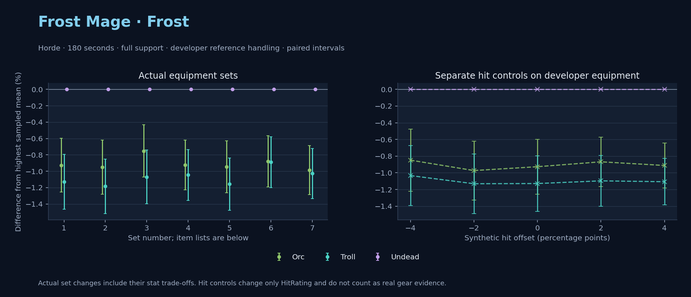

Horde · Orc / Troll / Undead

No pet or guardian appears in the reference combat metrics. Reference: Orc, developer equipment, 180 seconds and full support. Pet choices remain those of the developer build.
WoWSims developer · P1 Arcane
Unimplemented enchant or active set effects: [{"id": 181, "pieces": 2, "effects": ["+8 All Resistances."]}, {"id": 181, "pieces": 4, "effects": ["When struck in combat has a 2% chance of freezing the attacker in place for 3s. Can only occur once every 60 sec."]}]
180 seconds, full support and original developer references. Hit below is generic sheet melee / spell hit; school and talent bonuses can be attached directly to spells.
| Race | DPS | Gap and interval | Generic hit | Replay |
|---|---|---|---|---|
| Undead | 606.77 | +0.000% ± 0.000 | 2.9% / 2.9% | Native input · Website JSON |
| Orc | 601.15 | -0.926% ± 0.329 | 2.9% / 2.9% | Native input · Website JSON |
| Troll | 599.92 | -1.129% ± 0.333 | 2.9% / 2.9% | Native input · Website JSON |
| Slot | Item | ID | Enchant |
|---|---|---|---|
| Head | Magister's Crown | 16686 | |
| Neck | Gem of Trapped Innocents | 23057 | |
| Shoulder | Sorcerer's Mantle | 226936 | |
| Back | Drape of Vaulted Secrets | 21415 | |
| Chest | Magister's Robes | 16688 | |
| Wrist | Magister's Bindings | 16683 | |
| Hands | Magister's Gloves | 16684 | |
| Waist | Magister's Belt | 16685 | |
| Legs | Magister's Leggings | 16687 | |
| Feet | Magister's Boots | 16682 | |
| Ring 1 | Brilliant Watcher's Signet | 275982 | |
| Ring 2 | Ring of Entropy | 18543 | |
| Trinket 1 | Talisman of Ephemeral Power | 18820 | |
| Trinket 2 | Neltharion's Tear | 19379 | |
| Main hand | Grand Marshal's Mageblade | 23451 | |
| Off hand | Master Dragonslayer's Orb | 19366 | |
| Ranged / relic | Torch of Light | 279246 |
Community calculated list · Published pre-raid
180 seconds, full support and original developer references. Hit below is generic sheet melee / spell hit; school and talent bonuses can be attached directly to spells.
| Race | DPS | Gap and interval | Generic hit | Replay |
|---|---|---|---|---|
| Undead | 625.62 | +0.000% ± 0.000 | 5.6% / 5.6% | Native input · Website JSON |
| Orc | 619.67 | -0.951% ± 0.330 | 5.6% / 5.6% | Native input · Website JSON |
| Troll | 618.21 | -1.185% ± 0.333 | 5.6% / 5.6% | Native input · Website JSON |
| Slot | Item | ID | Enchant |
|---|---|---|---|
| Head | Sorcerer's Crown | 226935 | Arcanum of Focus |
| Neck | Archlight Talisman | 15856 | Enchant Necklace - Spell Power |
| Shoulder | Mantle of the Timbermaw | 19050 | |
| Back | Arcanoweave Cloak | 272411 | |
| Chest | Sorcerer's Robes | 226932 | Mystic Rugged Armor Kit |
| Wrist | Runecloth Cuffs | 254123 | Enchant Bracer - Greater Spellpower |
| Hands | Sorcerer's Gauntlets | 226930 | Enchant Gloves - Minor Haste |
| Waist | Belt of the Archmage | 18405 | |
| Legs | Magister's Leggings | 16687 | Arcanum of Focus |
| Feet | Sorcerer's Sandals | 226931 | Mystic Rugged Armor Kit |
| Ring 1 | Blessed Band of Light | 272407 | |
| Ring 2 | Maiden's Circle | 13001 | |
| Trinket 1 | Weakness Analyzer | 272438 | |
| Trinket 2 | Rune of the Guard Captain | 19120 | |
| Main hand | Sageblade | 22383 | |
| Off hand | Spirit of Aquementas | 11904 | Enchant Off-Hand - Superior Intellect |
| Ranged / relic | Greater Eternal Wand | 249237 |
Published one-slot hit alternative · Published pre-raid
One source-listed alternative; at least 80% of the source slot score retained. Reported hit selects the contrast; only native stats determine simulation outcomes. This is an experimental combination, not an endorsed best set.
180 seconds, full support and original developer references. Hit below is generic sheet melee / spell hit; school and talent bonuses can be attached directly to spells.
| Race | DPS | Gap and interval | Generic hit | Replay |
|---|---|---|---|---|
| Undead | 611.85 | +0.000% ± 0.000 | 4.6% / 4.6% | Native input · Website JSON |
| Orc | 607.25 | -0.752% ± 0.319 | 4.6% / 4.6% | Native input · Website JSON |
| Troll | 605.30 | -1.070% ± 0.327 | 4.6% / 4.6% | Native input · Website JSON |
| Slot | Item | ID | Enchant |
|---|---|---|---|
| Head | Sorcerer's Crown | 226935 | Arcanum of Focus |
| Neck | Archlight Talisman | 15856 | Enchant Necklace - Spell Power |
| Shoulder | Mantle of the Timbermaw | 19050 | |
| Back | Arcanoweave Cloak | 272411 | |
| Chest | Sorcerer's Robes | 226932 | Mystic Rugged Armor Kit |
| Wrist | Runecloth Cuffs | 254123 | Enchant Bracer - Greater Spellpower |
| Hands | Gloves of Spell Mastery | 14146 | Enchant Gloves - Minor Haste |
| Waist | Belt of the Archmage | 18405 | |
| Legs | Magister's Leggings | 16687 | Arcanum of Focus |
| Feet | Sorcerer's Sandals | 226931 | Mystic Rugged Armor Kit |
| Ring 1 | Blessed Band of Light | 272407 | |
| Ring 2 | Maiden's Circle | 13001 | |
| Trinket 1 | Weakness Analyzer | 272438 | |
| Trinket 2 | Rune of the Guard Captain | 19120 | |
| Main hand | Sageblade | 22383 | |
| Off hand | Spirit of Aquementas | 11904 | Enchant Off-Hand - Superior Intellect |
| Ranged / relic | Greater Eternal Wand | 249237 |
Published one-slot hit alternative · Published pre-raid
One source-listed alternative; at least 80% of the source slot score retained. Reported hit selects the contrast; only native stats determine simulation outcomes. This is an experimental combination, not an endorsed best set.
180 seconds, full support and original developer references. Hit below is generic sheet melee / spell hit; school and talent bonuses can be attached directly to spells.
| Race | DPS | Gap and interval | Generic hit | Replay |
|---|---|---|---|---|
| Undead | 626.45 | +0.000% ± 0.000 | 6.6% / 6.6% | Native input · Website JSON |
| Orc | 620.66 | -0.924% ± 0.304 | 6.6% / 6.6% | Native input · Website JSON |
| Troll | 619.90 | -1.044% ± 0.310 | 6.6% / 6.6% | Native input · Website JSON |
| Slot | Item | ID | Enchant |
|---|---|---|---|
| Head | Sorcerer's Crown | 226935 | Arcanum of Focus |
| Neck | Archlight Talisman | 15856 | Enchant Necklace - Spell Power |
| Shoulder | Mantle of the Timbermaw | 19050 | |
| Back | Arcanoweave Cloak | 272411 | |
| Chest | Sorcerer's Robes | 226932 | Mystic Rugged Armor Kit |
| Wrist | Runecloth Cuffs | 254123 | Enchant Bracer - Greater Spellpower |
| Hands | Sorcerer's Gauntlets | 226930 | Enchant Gloves - Minor Haste |
| Waist | Belt of the Archmage | 18405 | |
| Legs | Magister's Leggings | 16687 | Arcanum of Focus |
| Feet | Sorcerer's Sandals | 226931 | Mystic Rugged Armor Kit |
| Ring 1 | Blessed Band of Light | 272407 | |
| Ring 2 | Channeler's Ring | 272406 | |
| Trinket 1 | Weakness Analyzer | 272438 | |
| Trinket 2 | Rune of the Guard Captain | 19120 | |
| Main hand | Sageblade | 22383 | |
| Off hand | Spirit of Aquementas | 11904 | Enchant Off-Hand - Superior Intellect |
| Ranged / relic | Greater Eternal Wand | 249237 |
Published ranked alternatives · Published pre-raid
Recorded source replacements: [{"slot": "shoulder", "from": 227808, "to": 19050, "publishedAlternativeRank": 1, "publishedEpDelta": -10.7, "reason": "First published alternative compatible with the current WoWSims database, class, faction and occupied slots."}, {"slot": "waist", "from": 228190, "to": 18405, "publishedAlternativeRank": 1, "publishedEpDelta": -12.2, "reason": "First published alternative compatible with the current WoWSims database, class, faction and occupied slots."}]
180 seconds, full support and original developer references. Hit below is generic sheet melee / spell hit; school and talent bonuses can be attached directly to spells.
| Race | DPS | Gap and interval | Generic hit | Replay |
|---|---|---|---|---|
| Undead | 625.21 | +0.000% ± 0.000 | 5.8% / 5.8% | Native input · Website JSON |
| Orc | 619.30 | -0.946% ± 0.319 | 5.8% / 5.8% | Native input · Website JSON |
| Troll | 617.97 | -1.158% ± 0.320 | 5.8% / 5.8% | Native input · Website JSON |
| Slot | Item | ID | Enchant |
|---|---|---|---|
| Head | Sorcerer's Crown | 226935 | Arcanum of Focus |
| Neck | Archlight Talisman | 15856 | Enchant Necklace - Spell Power |
| Shoulder | Mantle of the Timbermaw | 19050 | |
| Back | Arcanoweave Cloak | 272411 | |
| Chest | Robe of the Archmage | 14152 | Mystic Rugged Armor Kit |
| Wrist | Runecloth Cuffs | 254123 | Enchant Bracer - Greater Spellpower |
| Hands | Sorcerer's Gauntlets | 226930 | Enchant Gloves - Minor Haste |
| Waist | Belt of the Archmage | 18405 | |
| Legs | Magister's Leggings | 16687 | Arcanum of Focus |
| Feet | Sorcerer's Sandals | 226931 | Mystic Rugged Armor Kit |
| Ring 1 | Blessed Band of Light | 272407 | |
| Ring 2 | Maiden's Circle | 13001 | |
| Trinket 1 | Weakness Analyzer | 272438 | |
| Trinket 2 | Frozen Heart of the Mountain | 249469 | |
| Main hand | Sageblade | 22383 | |
| Off hand | Spirit of Aquementas | 11904 | Enchant Off-Hand - Superior Intellect |
| Ranged / relic | Brilliant Wand | 249385 |
Published one-slot hit alternative · Published pre-raid
One source-listed alternative; at least 80% of the source slot score retained. Reported hit selects the contrast; only native stats determine simulation outcomes. This is an experimental combination, not an endorsed best set.
Recorded source replacements: [{"slot": "shoulder", "from": 227808, "to": 19050, "publishedAlternativeRank": 1, "publishedEpDelta": -10.7, "reason": "First published alternative compatible with the current WoWSims database, class, faction and occupied slots."}, {"slot": "waist", "from": 228190, "to": 18405, "publishedAlternativeRank": 1, "publishedEpDelta": -12.2, "reason": "First published alternative compatible with the current WoWSims database, class, faction and occupied slots."}]
180 seconds, full support and original developer references. Hit below is generic sheet melee / spell hit; school and talent bonuses can be attached directly to spells.
| Race | DPS | Gap and interval | Generic hit | Replay |
|---|---|---|---|---|
| Undead | 620.33 | +0.000% ± 0.000 | 4.8% / 4.8% | Native input · Website JSON |
| Orc | 614.89 | -0.877% ± 0.313 | 4.8% / 4.8% | Native input · Website JSON |
| Troll | 614.82 | -0.889% ± 0.312 | 4.8% / 4.8% | Native input · Website JSON |
| Slot | Item | ID | Enchant |
|---|---|---|---|
| Head | Sorcerer's Crown | 226935 | Arcanum of Focus |
| Neck | Archlight Talisman | 15856 | Enchant Necklace - Spell Power |
| Shoulder | Mantle of the Timbermaw | 19050 | |
| Back | Arcanoweave Cloak | 272411 | |
| Chest | Robe of the Archmage | 14152 | Mystic Rugged Armor Kit |
| Wrist | Runecloth Cuffs | 254123 | Enchant Bracer - Greater Spellpower |
| Hands | Gloves of Spell Mastery | 14146 | Enchant Gloves - Minor Haste |
| Waist | Belt of the Archmage | 18405 | |
| Legs | Magister's Leggings | 16687 | Arcanum of Focus |
| Feet | Sorcerer's Sandals | 226931 | Mystic Rugged Armor Kit |
| Ring 1 | Blessed Band of Light | 272407 | |
| Ring 2 | Maiden's Circle | 13001 | |
| Trinket 1 | Weakness Analyzer | 272438 | |
| Trinket 2 | Frozen Heart of the Mountain | 249469 | |
| Main hand | Sageblade | 22383 | |
| Off hand | Spirit of Aquementas | 11904 | Enchant Off-Hand - Superior Intellect |
| Ranged / relic | Brilliant Wand | 249385 |
Published one-slot hit alternative · Published pre-raid
One source-listed alternative; at least 80% of the source slot score retained. Reported hit selects the contrast; only native stats determine simulation outcomes. This is an experimental combination, not an endorsed best set.
Recorded source replacements: [{"slot": "shoulder", "from": 227808, "to": 19050, "publishedAlternativeRank": 1, "publishedEpDelta": -10.7, "reason": "First published alternative compatible with the current WoWSims database, class, faction and occupied slots."}, {"slot": "waist", "from": 228190, "to": 18405, "publishedAlternativeRank": 1, "publishedEpDelta": -12.2, "reason": "First published alternative compatible with the current WoWSims database, class, faction and occupied slots."}]
180 seconds, full support and original developer references. Hit below is generic sheet melee / spell hit; school and talent bonuses can be attached directly to spells.
| Race | DPS | Gap and interval | Generic hit | Replay |
|---|---|---|---|---|
| Undead | 626.92 | +0.000% ± 0.000 | 6.8% / 6.8% | Native input · Website JSON |
| Orc | 620.75 | -0.985% ± 0.300 | 6.8% / 6.8% | Native input · Website JSON |
| Troll | 620.48 | -1.028% ± 0.307 | 6.8% / 6.8% | Native input · Website JSON |
| Slot | Item | ID | Enchant |
|---|---|---|---|
| Head | Sorcerer's Crown | 226935 | Arcanum of Focus |
| Neck | Archlight Talisman | 15856 | Enchant Necklace - Spell Power |
| Shoulder | Mantle of the Timbermaw | 19050 | |
| Back | Arcanoweave Cloak | 272411 | |
| Chest | Robe of the Archmage | 14152 | Mystic Rugged Armor Kit |
| Wrist | Runecloth Cuffs | 254123 | Enchant Bracer - Greater Spellpower |
| Hands | Sorcerer's Gauntlets | 226930 | Enchant Gloves - Minor Haste |
| Waist | Belt of the Archmage | 18405 | |
| Legs | Magister's Leggings | 16687 | Arcanum of Focus |
| Feet | Sorcerer's Sandals | 226931 | Mystic Rugged Armor Kit |
| Ring 1 | Blessed Band of Light | 272407 | |
| Ring 2 | Channeler's Ring | 272406 | |
| Trinket 1 | Weakness Analyzer | 272438 | |
| Trinket 2 | Frozen Heart of the Mountain | 249469 | |
| Main hand | Sageblade | 22383 | |
| Off hand | Spirit of Aquementas | 11904 | Enchant Off-Hand - Superior Intellect |
| Ranged / relic | Brilliant Wand | 249385 |
The same declared pool is available to every race. Each race keeps its best validation-sample set with its screening-selected racial policy. Separate samples confirm that choice, with fresh precision samples near the practical-loss boundary. Gaps use the highest sampled mean under that same duration, support and reference treatment as their reference. A zero reference gap does not certify a race; the main matrix also allows uncertainty in the leader.
| Pool | Seconds | Support | References | Race | DPS | Gap and interval | Racial policies / mana | Selected set | Generic hit: melee / spell | Replay |
|---|---|---|---|---|---|---|---|---|---|---|
| published-pre-raid | 60 | full | developer | Troll | 651.02 | +0.000% ± 0.00020,000 iterations | developer / developer / developerMana waits 0.0s | published-mage-frost-horde-9682f66f3210a22d-higher-hit | 6.8% / 6.8% | Input · Result · Stats |
| published-pre-raid | 60 | full | developer | Undead | 647.20 | -0.587% ± 0.08020,000 iterations | developer / developer / developerMana waits 0.0s | published-mage-frost-horde-9682f66f3210a22d-higher-hit | 6.8% / 6.8% | Input · Result · Stats |
| published-pre-raid | 60 | full | developer | Orc | 645.46 | -0.855% ± 0.04220,000 iterations | developer / developer / developerMana waits 0.0s | published-mage-frost-horde-9682f66f3210a22d-higher-hit | 6.8% / 6.8% | Input · Result · Stats |
| published-pre-raid | 60 | full | explicit | Troll | 651.02 | +0.000% ± 0.00020,000 iterations | developer / developer / developerMana waits 0.0s | published-mage-frost-horde-9682f66f3210a22d-higher-hit | 6.8% / 6.8% | Input · Result · Stats |
| published-pre-raid | 60 | full | explicit | Undead | 647.20 | -0.587% ± 0.08020,000 iterations | developer / developer / developerMana waits 0.0s | published-mage-frost-horde-9682f66f3210a22d-higher-hit | 6.8% / 6.8% | Input · Result · Stats |
| published-pre-raid | 60 | full | explicit | Orc | 645.46 | -0.855% ± 0.04220,000 iterations | developer / developer / developerMana waits 0.0s | published-mage-frost-horde-9682f66f3210a22d-higher-hit | 6.8% / 6.8% | Input · Result · Stats |
| published-pre-raid | 60 | self | developer | Troll | 572.14 | +0.000% ± 0.0005,000 iterations | developer / developer / developerMana waits 0.0s | published-mage-frost-horde-9682f66f3210a22d-higher-hit | 6.8% / 6.8% | Input · Result · Stats |
| published-pre-raid | 60 | self | developer | Undead | 567.18 | -0.867% ± 0.1735,000 iterations | developer / developer / developerMana waits 0.0s | published-mage-frost-horde-9682f66f3210a22d | 5.8% / 5.8% | Input · Result · Stats |
| published-pre-raid | 60 | self | developer | Orc | 567.18 | -0.867% ± 0.0865,000 iterations | developer / developer / developerMana waits 0.0s | published-mage-frost-horde-9682f66f3210a22d-higher-hit | 6.8% / 6.8% | Input · Result · Stats |
| published-pre-raid | 60 | self | explicit | Troll | 572.14 | +0.000% ± 0.0005,000 iterations | developer / developer / developerMana waits 0.0s | published-mage-frost-horde-9682f66f3210a22d-higher-hit | 6.8% / 6.8% | Input · Result · Stats |
| published-pre-raid | 60 | self | explicit | Undead | 567.18 | -0.867% ± 0.1735,000 iterations | developer / developer / developerMana waits 0.0s | published-mage-frost-horde-9682f66f3210a22d | 5.8% / 5.8% | Input · Result · Stats |
| published-pre-raid | 60 | self | explicit | Orc | 567.18 | -0.867% ± 0.0865,000 iterations | developer / developer / developerMana waits 0.0s | published-mage-frost-horde-9682f66f3210a22d-higher-hit | 6.8% / 6.8% | Input · Result · Stats |
| published-pre-raid | 180 | full | developer | Undead | 624.77 | +0.000% ± 0.0005,000 iterations | developer / developer / developerMana waits 0.6s | published-mage-frost-horde-9682f66f3210a22d-higher-hit | 6.8% / 6.8% | Input · Result · Stats · Website JSON |
| published-pre-raid | 180 | full | developer | Orc | 619.35 | -0.868% ± 0.1365,000 iterations | developer / developer / developerMana waits 0.6s | published-mage-frost-horde-9682f66f3210a22d-higher-hit | 6.8% / 6.8% | Input · Result · Stats · Website JSON |
| published-pre-raid | 180 | full | developer | Troll | 618.91 | -0.938% ± 0.1385,000 iterations | developer / developer / developerMana waits 0.6s | published-mage-frost-horde-9682f66f3210a22d-higher-hit | 6.8% / 6.8% | Input · Result · Stats · Website JSON |
| published-pre-raid | 180 | full | explicit | Undead | 624.77 | +0.000% ± 0.0005,000 iterations | developer / developer / developerMana waits 0.6s | published-mage-frost-horde-9682f66f3210a22d-higher-hit | 6.8% / 6.8% | Input · Result · Stats |
| published-pre-raid | 180 | full | explicit | Orc | 619.35 | -0.868% ± 0.1365,000 iterations | developer / developer / developerMana waits 0.6s | published-mage-frost-horde-9682f66f3210a22d-higher-hit | 6.8% / 6.8% | Input · Result · Stats |
| published-pre-raid | 180 | full | explicit | Troll | 618.91 | -0.938% ± 0.1385,000 iterations | developer / developer / developerMana waits 0.6s | published-mage-frost-horde-9682f66f3210a22d-higher-hit | 6.8% / 6.8% | Input · Result · Stats |
| published-pre-raid | 180 | self | developer | Undead | 507.63 | +0.000% ± 0.0005,000 iterations | developer / developer / developerMana waits 17.8s | published-mage-frost-horde-455086ab14e61f20-higher-hit | 6.6% / 6.6% | Input · Result · Stats |
| published-pre-raid | 180 | self | developer | Orc | 504.05 | -0.706% ± 0.1675,000 iterations | developer / developer / developerMana waits 18.3s | published-mage-frost-horde-455086ab14e61f20-higher-hit | 6.6% / 6.6% | Input · Result · Stats |
| published-pre-raid | 180 | self | developer | Troll | 501.34 | -1.239% ± 0.1755,000 iterations | developer / developer / developerMana waits 20.3s | published-mage-frost-horde-455086ab14e61f20-higher-hit | 6.6% / 6.6% | Input · Result · Stats |
| published-pre-raid | 180 | self | explicit | Undead | 507.63 | +0.000% ± 0.0005,000 iterations | developer / developer / developerMana waits 17.8s | published-mage-frost-horde-455086ab14e61f20-higher-hit | 6.6% / 6.6% | Input · Result · Stats |
| published-pre-raid | 180 | self | explicit | Orc | 504.05 | -0.706% ± 0.1675,000 iterations | developer / developer / developerMana waits 18.3s | published-mage-frost-horde-455086ab14e61f20-higher-hit | 6.6% / 6.6% | Input · Result · Stats |
| published-pre-raid | 180 | self | explicit | Troll | 501.34 | -1.239% ± 0.1755,000 iterations | developer / developer / developerMana waits 20.3s | published-mage-frost-horde-455086ab14e61f20-higher-hit | 6.6% / 6.6% | Input · Result · Stats |
| published-pre-raid | 300 | full | developer | Undead | 625.95 | +0.000% ± 0.0005,000 iterations | developer / developer / developerMana waits 5.7s | published-mage-frost-horde-9682f66f3210a22d-higher-hit | 6.8% / 6.8% | Input · Result · Stats |
| published-pre-raid | 300 | full | developer | Troll | 621.33 | -0.737% ± 0.0985,000 iterations | oncd / developer / developerMana waits 7.6s | published-mage-frost-horde-9682f66f3210a22d-higher-hit | 6.8% / 6.8% | Input · Result · Stats |
| published-pre-raid | 300 | full | developer | Orc | 620.14 | -0.928% ± 0.1025,000 iterations | oncd / developer / developerMana waits 7.8s | published-mage-frost-horde-9682f66f3210a22d | 5.8% / 5.8% | Input · Result · Stats |
| published-pre-raid | 300 | full | explicit | Undead | 625.95 | +0.000% ± 0.0005,000 iterations | developer / developer / developerMana waits 5.7s | published-mage-frost-horde-9682f66f3210a22d-higher-hit | 6.8% / 6.8% | Input · Result · Stats |
| published-pre-raid | 300 | full | explicit | Troll | 621.33 | -0.737% ± 0.0985,000 iterations | oncd / developer / developerMana waits 7.6s | published-mage-frost-horde-9682f66f3210a22d-higher-hit | 6.8% / 6.8% | Input · Result · Stats |
| published-pre-raid | 300 | full | explicit | Orc | 620.14 | -0.928% ± 0.1025,000 iterations | oncd / developer / developerMana waits 7.8s | published-mage-frost-horde-9682f66f3210a22d | 5.8% / 5.8% | Input · Result · Stats |
| published-pre-raid | 300 | self | developer | Undead | 452.35 | +0.000% ± 0.0005,000 iterations | developer / developer / developerMana waits 100.4s | published-mage-frost-horde-455086ab14e61f20-higher-hit | 6.6% / 6.6% | Input · Result · Stats |
| published-pre-raid | 300 | self | developer | Orc | 448.14 | -0.929% ± 0.1605,000 iterations | developer / developer / developerMana waits 101.5s | published-mage-frost-horde-455086ab14e61f20-higher-hit | 6.6% / 6.6% | Input · Result · Stats |
| published-pre-raid | 300 | self | developer | Troll | 444.77 | -1.674% ± 0.1655,000 iterations | oncd / developer / developerMana waits 103.9s | published-mage-frost-horde-455086ab14e61f20-higher-hit | 6.6% / 6.6% | Input · Result · Stats |
| published-pre-raid | 300 | self | explicit | Undead | 452.35 | +0.000% ± 0.0005,000 iterations | developer / developer / developerMana waits 100.4s | published-mage-frost-horde-455086ab14e61f20-higher-hit | 6.6% / 6.6% | Input · Result · Stats |
| published-pre-raid | 300 | self | explicit | Orc | 448.14 | -0.929% ± 0.1605,000 iterations | developer / developer / developerMana waits 101.5s | published-mage-frost-horde-455086ab14e61f20-higher-hit | 6.6% / 6.6% | Input · Result · Stats |
| published-pre-raid | 300 | self | explicit | Troll | 444.77 | -1.674% ± 0.1655,000 iterations | oncd / developer / developerMana waits 103.9s | published-mage-frost-horde-455086ab14e61f20-higher-hit | 6.6% / 6.6% | Input · Result · Stats |
| developer-reference | 60 | full | developer | Troll | 631.83 | +0.000% ± 0.00020,000 iterations | developer / developer / developerMana waits 0.0s | developer | 2.9% / 2.9% | Input · Result · Stats |
| developer-reference | 60 | full | developer | Undead | 630.66 | -0.185% ± 0.09420,000 iterations | developer / developer / developerMana waits 0.0s | developer | 2.9% / 2.9% | Input · Result · Stats |
| developer-reference | 60 | full | developer | Orc | 628.05 | -0.598% ± 0.04120,000 iterations | developer / developer / developerMana waits 0.0s | developer | 2.9% / 2.9% | Input · Result · Stats |
| developer-reference | 60 | full | explicit | Troll | 631.83 | +0.000% ± 0.00020,000 iterations | developer / developer / developerMana waits 0.0s | developer | 2.9% / 2.9% | Input · Result · Stats |
| developer-reference | 60 | full | explicit | Undead | 630.66 | -0.185% ± 0.09420,000 iterations | developer / developer / developerMana waits 0.0s | developer | 2.9% / 2.9% | Input · Result · Stats |
| developer-reference | 60 | full | explicit | Orc | 628.05 | -0.598% ± 0.04120,000 iterations | developer / developer / developerMana waits 0.0s | developer | 2.9% / 2.9% | Input · Result · Stats |
| developer-reference | 60 | self | developer | Troll | 556.59 | +0.000% ± 0.0005,000 iterations | developer / developer / developerMana waits 0.0s | developer | 2.9% / 2.9% | Input · Result · Stats |
| developer-reference | 60 | self | developer | Undead | 553.39 | -0.573% ± 0.1865,000 iterations | developer / developer / developerMana waits 0.0s | developer | 2.9% / 2.9% | Input · Result · Stats |
| developer-reference | 60 | self | developer | Orc | 552.81 | -0.678% ± 0.0845,000 iterations | developer / developer / developerMana waits 0.0s | developer | 2.9% / 2.9% | Input · Result · Stats |
| developer-reference | 60 | self | explicit | Troll | 556.59 | +0.000% ± 0.0005,000 iterations | developer / developer / developerMana waits 0.0s | developer | 2.9% / 2.9% | Input · Result · Stats |
| developer-reference | 60 | self | explicit | Undead | 553.39 | -0.573% ± 0.1865,000 iterations | developer / developer / developerMana waits 0.0s | developer | 2.9% / 2.9% | Input · Result · Stats |
| developer-reference | 60 | self | explicit | Orc | 552.81 | -0.678% ± 0.0845,000 iterations | developer / developer / developerMana waits 0.0s | developer | 2.9% / 2.9% | Input · Result · Stats |
| developer-reference | 180 | full | developer | Undead | 606.26 | +0.000% ± 0.0005,000 iterations | developer / developer / developerMana waits 0.1s | developer | 2.9% / 2.9% | Input · Result · Stats · Website JSON |
| developer-reference | 180 | full | developer | Orc | 600.53 | -0.945% ± 0.1475,000 iterations | developer / developer / developerMana waits 0.1s | developer | 2.9% / 2.9% | Input · Result · Stats · Website JSON |
| developer-reference | 180 | full | developer | Troll | 599.10 | -1.182% ± 0.1495,000 iterations | developer / developer / developerMana waits 0.1s | developer | 2.9% / 2.9% | Input · Result · Stats · Website JSON |
| developer-reference | 180 | full | explicit | Undead | 606.26 | +0.000% ± 0.0005,000 iterations | developer / developer / developerMana waits 0.1s | developer | 2.9% / 2.9% | Input · Result · Stats |
| developer-reference | 180 | full | explicit | Orc | 600.53 | -0.945% ± 0.1475,000 iterations | developer / developer / developerMana waits 0.1s | developer | 2.9% / 2.9% | Input · Result · Stats |
| developer-reference | 180 | full | explicit | Troll | 599.10 | -1.182% ± 0.1495,000 iterations | developer / developer / developerMana waits 0.1s | developer | 2.9% / 2.9% | Input · Result · Stats |
| developer-reference | 180 | self | developer | Undead | 499.92 | +0.000% ± 0.0005,000 iterations | developer / developer / developerMana waits 9.7s | developer | 2.9% / 2.9% | Input · Result · Stats |
| developer-reference | 180 | self | developer | Orc | 496.32 | -0.721% ± 0.1665,000 iterations | developer / developer / developerMana waits 10.3s | developer | 2.9% / 2.9% | Input · Result · Stats |
| developer-reference | 180 | self | developer | Troll | 494.37 | -1.110% ± 0.1695,000 iterations | developer / developer / developerMana waits 11.8s | developer | 2.9% / 2.9% | Input · Result · Stats |
| developer-reference | 180 | self | explicit | Undead | 499.92 | +0.000% ± 0.0005,000 iterations | developer / developer / developerMana waits 9.7s | developer | 2.9% / 2.9% | Input · Result · Stats |
| developer-reference | 180 | self | explicit | Orc | 496.32 | -0.721% ± 0.1665,000 iterations | developer / developer / developerMana waits 10.3s | developer | 2.9% / 2.9% | Input · Result · Stats |
| developer-reference | 180 | self | explicit | Troll | 494.37 | -1.110% ± 0.1695,000 iterations | developer / developer / developerMana waits 11.8s | developer | 2.9% / 2.9% | Input · Result · Stats |
| developer-reference | 300 | full | developer | Undead | 596.00 | +0.000% ± 0.0005,000 iterations | developer / developer / developerMana waits 0.7s | developer | 2.9% / 2.9% | Input · Result · Stats |
| developer-reference | 300 | full | developer | Troll | 590.39 | -0.941% ± 0.1095,000 iterations | oncd / developer / developerMana waits 0.8s | developer | 2.9% / 2.9% | Input · Result · Stats |
| developer-reference | 300 | full | developer | Orc | 589.74 | -1.051% ± 0.1095,000 iterations | developer / developer / developerMana waits 0.7s | developer | 2.9% / 2.9% | Input · Result · Stats |
| developer-reference | 300 | full | explicit | Undead | 596.00 | +0.000% ± 0.0005,000 iterations | developer / developer / developerMana waits 0.7s | developer | 2.9% / 2.9% | Input · Result · Stats |
| developer-reference | 300 | full | explicit | Troll | 590.39 | -0.941% ± 0.1095,000 iterations | oncd / developer / developerMana waits 0.8s | developer | 2.9% / 2.9% | Input · Result · Stats |
| developer-reference | 300 | full | explicit | Orc | 589.74 | -1.051% ± 0.1095,000 iterations | developer / developer / developerMana waits 0.7s | developer | 2.9% / 2.9% | Input · Result · Stats |
| developer-reference | 300 | self | developer | Undead | 449.37 | +0.000% ± 0.0005,000 iterations | developer / developer / developerMana waits 88.6s | developer | 2.9% / 2.9% | Input · Result · Stats |
| developer-reference | 300 | self | developer | Orc | 444.86 | -1.005% ± 0.1645,000 iterations | oncd / developer / developerMana waits 89.4s | developer | 2.9% / 2.9% | Input · Result · Stats |
| developer-reference | 300 | self | developer | Troll | 442.18 | -1.602% ± 0.1675,000 iterations | developer / developer / developerMana waits 92.2s | developer | 2.9% / 2.9% | Input · Result · Stats |
| developer-reference | 300 | self | explicit | Undead | 449.37 | +0.000% ± 0.0005,000 iterations | developer / developer / developerMana waits 88.6s | developer | 2.9% / 2.9% | Input · Result · Stats |
| developer-reference | 300 | self | explicit | Orc | 444.86 | -1.005% ± 0.1645,000 iterations | oncd / developer / developerMana waits 89.4s | developer | 2.9% / 2.9% | Input · Result · Stats |
| developer-reference | 300 | self | explicit | Troll | 442.18 | -1.602% ± 0.1675,000 iterations | developer / developer / developerMana waits 92.2s | developer | 2.9% / 2.9% | Input · Result · Stats |
180 seconds, full support and the developer equipment anchor. These checks test creature sensitivity without a full gear search.
| Target | References | Race | DPS | Gap and interval | Replay |
|---|---|---|---|---|---|
| beast | developer | Troll | 629.92 | +0.000% ± 0.000 | Input · Result |
| beast | developer | Undead | 606.77 | -3.675% ± 0.325 | Input · Result |
| beast | developer | Orc | 601.14 | -4.568% ± 0.169 | Input · Result |
| beast | explicit | Troll | 629.92 | +0.000% ± 0.000 | Input · Result |
| beast | explicit | Undead | 606.77 | -3.675% ± 0.325 | Input · Result |
| beast | explicit | Orc | 601.14 | -4.568% ± 0.169 | Input · Result |
| elemental | developer | Undead | 606.77 | +0.000% ± 0.000 | Input · Result |
| elemental | developer | Orc | 601.14 | -0.927% ± 0.329 | Input · Result |
| elemental | developer | Troll | 599.92 | -1.129% ± 0.333 | Input · Result |
| elemental | explicit | Undead | 606.77 | +0.000% ± 0.000 | Input · Result |
| elemental | explicit | Orc | 601.14 | -0.927% ± 0.329 | Input · Result |
| elemental | explicit | Troll | 599.92 | -1.129% ± 0.333 | Input · Result |
Some equipment has unimplemented enchant or set effects
These known-issue notes are source context. Runtime checks establish current cast coverage, including Mutilate. They do not prove every mechanic matches the game.